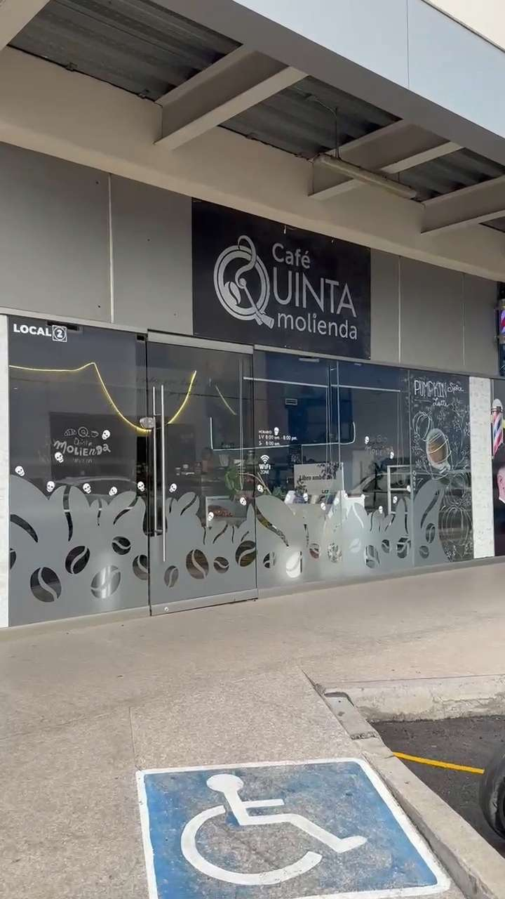
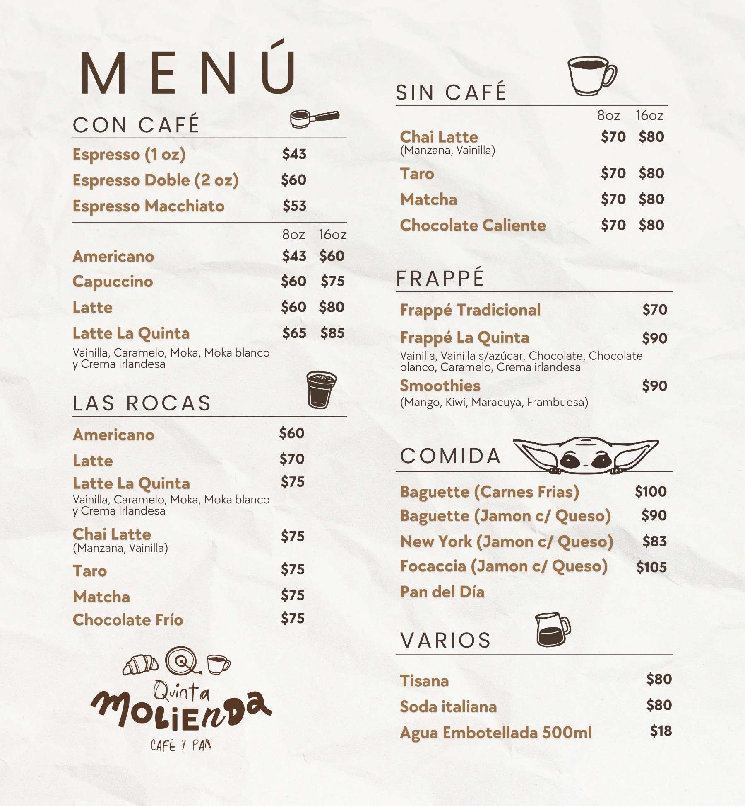
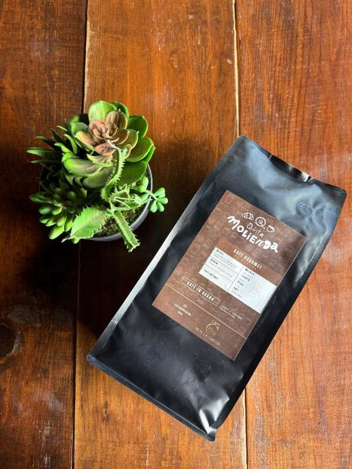
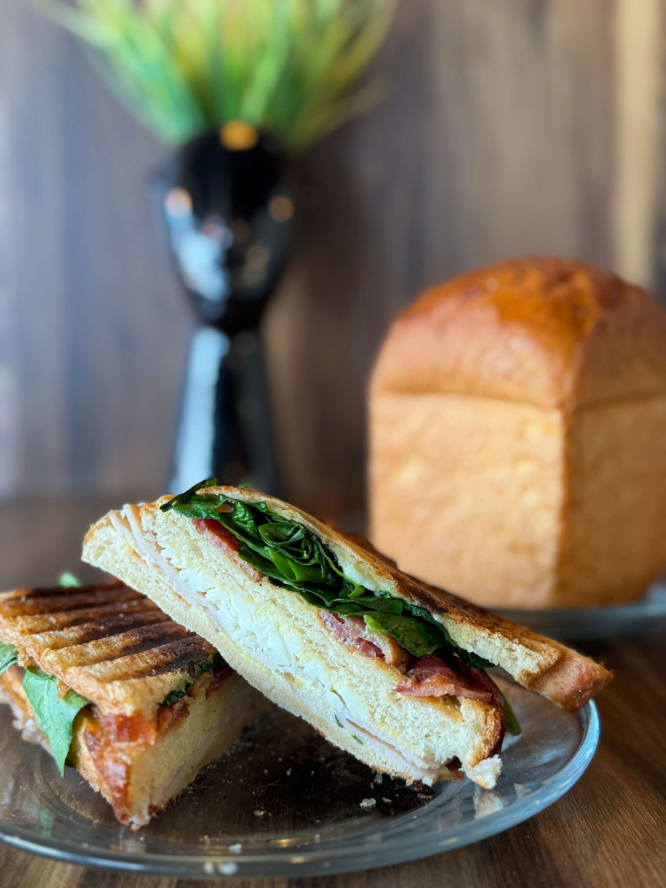

Panes

Fachada

Somos una cafetería cercana, donde buscamos
que te sientas cómodo haciendo home office con
productos de calidad y de Jalisco.
Ofrecemos café y alimentos de calidad
en un espacio acogedor y agradable.





Nos ubicamos en: Av. Camino a Bosque de San Isidro 530-2, San José del Bajío, 45140 Zapopan, Jal.
Instagram y Facebook: @Cafequintamolienda_gdl
Tiktok: @cafequintamolienda